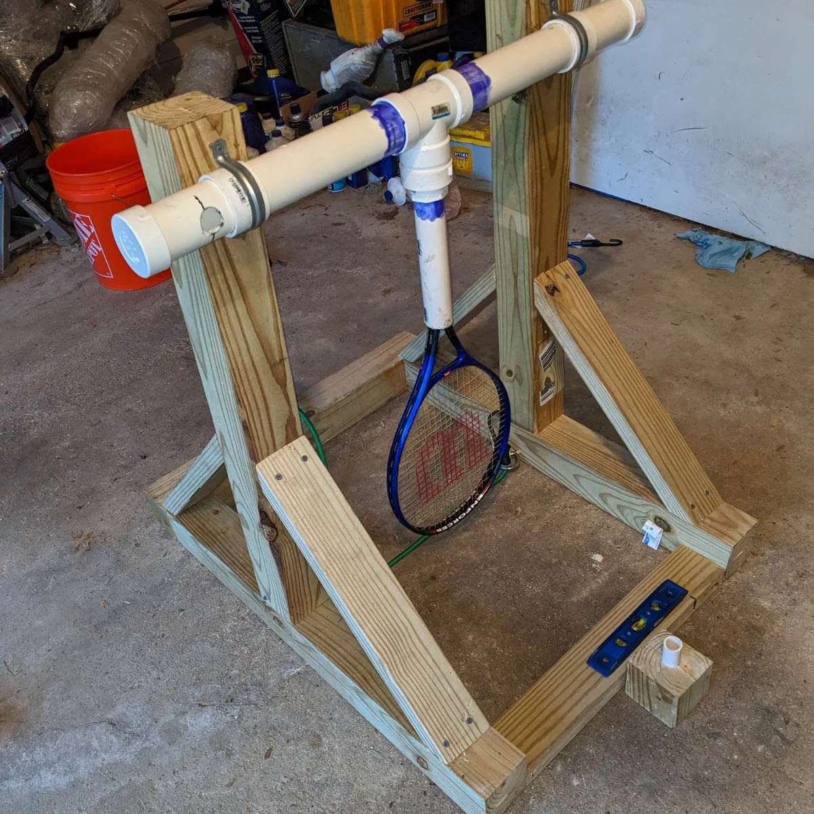

ME 347 Project 2 · Structural design & FEA
Traffic mast-arm design
A SolidWorks and ANSYS study of wind loading, structural reinforcement, safety factor, and material tradeoffs.
View projectAbout me

I’ve always learned by taking things apart, figuring out how they work, and trying something for myself.
That curiosity led me to mechanical engineering. I enjoy working on cars, repairing electronics, and turning an idea into a physical build. These projects share what I’ve worked on, how I approached the challenges, and what I learned along the way.
Selected projects
Design, analysis, and physical builds,
followed by laboratory work and personal repairs.
ME 347 Project 2 · Structural design & FEA
A SolidWorks and ANSYS study of wind loading, structural reinforcement, safety factor, and material tradeoffs.
View project
ME 347 · Mechanism design & prototyping
Developing a compact gear mechanism and learning from clearance, alignment, and tooth-skipping issues in the printed prototype.
View project
Course project · Team design, build & test
Designing and building a launcher under a $100 budget, then comparing 12 recorded trials across four test conditions.
View projectUIC Formula SAE · Team concept design
Contributing SolidWorks concepts for a push bar that would give the team a better way to move the vehicle.
View projectUL Solutions · Fluids laboratory
Organizing equipment, setup, procedures, and potential risks into accessible guides for infrequently performed laboratory tests.
View project
Personal project · Electronics & assembly
Assembling the circuit board and enclosure of a speaker kit, with original soldering footage and photos of the finished build.
View project
Personal project · Troubleshooting & repair
Replacing an iPhone 6 screen and working through iPhone 5 motherboard and battery issues using donor components.
View projectUL Solutions · Project information & analysis
Collecting consistent project information so the department could examine trends across its completed work.
View project